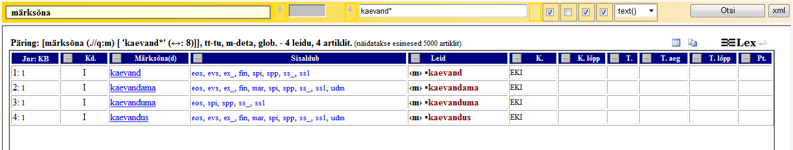
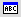

Otsingutulemuste tabel
Kui otsingu tingimustele vastavaid artikleid on rohkem kui üks, kuvatakse otsinguleiud tabelina. Jälgi tabeli kohal infot päringu kohta - mitu leidu, mitu artiklit, näidatakse mingi arv esimest artiklit.
Otsingutulemuste tabelis kuvatakse artikli järjenumber, köite number, märksõna element ja klõpsatav märksõna, leiuelement ja leid, artikli koostaja nimi, koostamise aeg, artikli toimetaja nimi, viimase toimetamise aeg. Leidude veerus on otsitud järjend kollase taustaga võõbatud.
On võimalik kuvada igast veerust kas ainult erinevad väärtused või kõik väärtused (veeru päises olev nupp + või -).
Otsingutulemuste tabeli ja viimati vaadatud sõnaartikli vahel liikumiseks kasuta kaht nuppu (Artikkel) ja
 (Otsingutulemuste tabel), mis on Toimetamisala kohal köite valikust paremal.
(Otsingutulemuste tabel), mis on Toimetamisala kohal köite valikust paremal.Iga veergu tabelis saab sorteerida veeru päisele klõpsamisega. Pöördjärjestuseks vasakklõps veeru päisel<.
Tulemuste tabelit saab kopeerida nupu Kopeeri tabel abil (vasakul ülal tabeli viimaste veergude kohal).